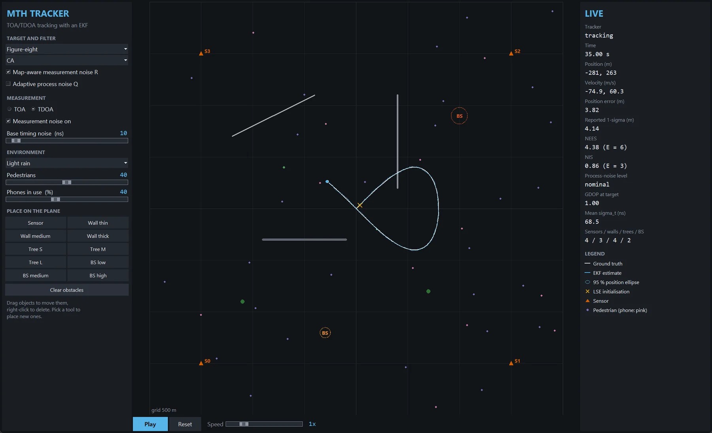

MTH Tracker: time-based target localisation and tracking
A two-dimensional TOA/TDOA tracker, least-squares initialiser and extended Kalman filter, validated against the posterior Cramér–Rao bound, with a real-time interactive simulator.

Overview
A sensor network measures when a signal from a moving target arrives (TOA), or the differences between arrival times (TDOA). MTH Tracker turns those times into a position and velocity track and asks how close it comes to the best any unbiased estimator could do.
The answer is very close: on matched data the Monte Carlo RMSE is between 0.967 and 1.004 of the posterior Cramér–Rao bound for constant-velocity, constant-acceleration, Singer and coordinated-turn models, and the filter's self-reported uncertainty is consistent to within 3 %.
The report derives the mathematics, proves three propositions and presents ten experiments: geometry and GDOP, sensor count, noise sweeps, TOA vs TDOA, manoeuvres, occlusion and an environment ladder. Every figure and number in it is regenerated by one command.
What I built
- Two plug-in axes: any motion model (CV, CA, Singer with exact Van Loan discretisation, CT) combines with any measurement model, and the EKF never branches on their type.
- TOA and TDOA as one model
z = D r(p)/c + D w; TDOA noise is simulated per sensor and then differenced, so its correlation appears in the data rather than being imposed. - Closed-form initialisation (Chan–Ho for three sensors), Gauss–Newton refinement and explicit resolution of ambiguous geometries; Joseph-form updates with one Cholesky factorisation and no explicit inverses.
- NIS-gated adaptive process noise for manoeuvres and map-aware measurement noise from an environment model; 76 tests that run in under 10 s.
The interactive simulator (python -m mth_tracker gui)
Run it
$ pip install -e . $ python -m mth_tracker gui $ python -m mth_tracker run --trajectory coordinated_turn --motion CT --runs 50 $ python -m mth_tracker reproduce # every figure and number, < 3 min